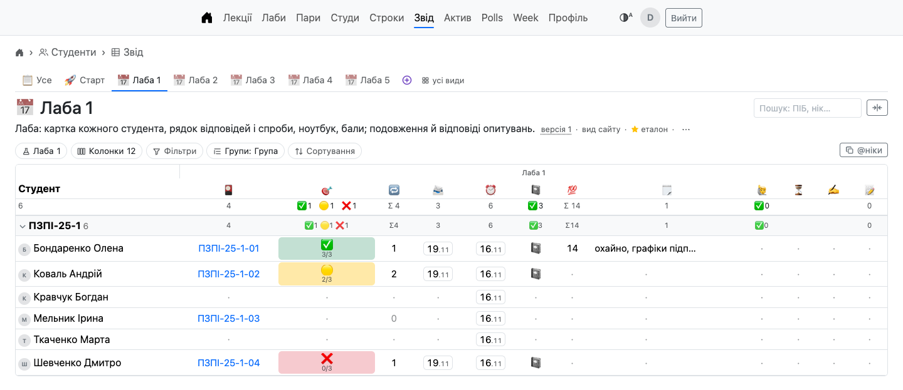
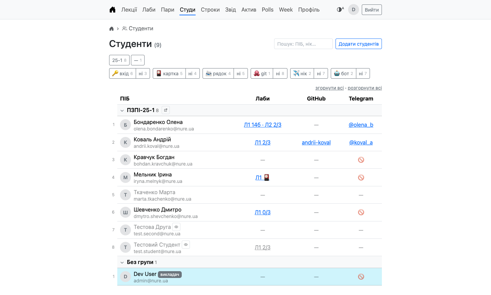
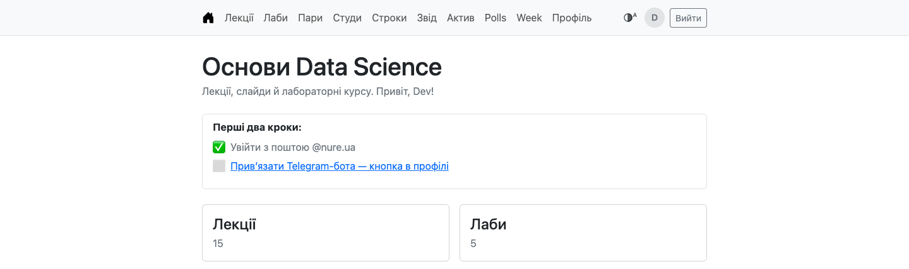
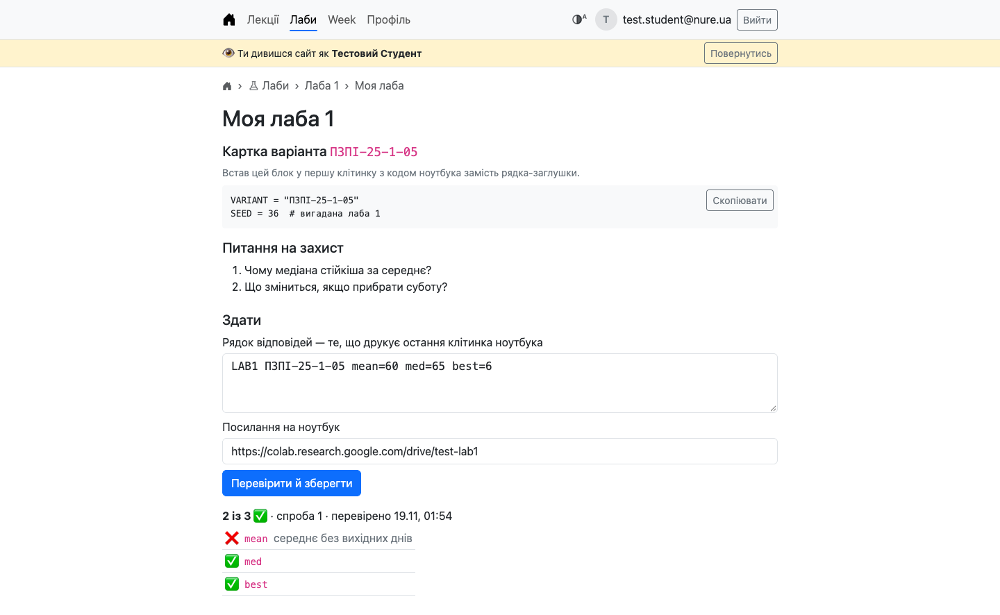
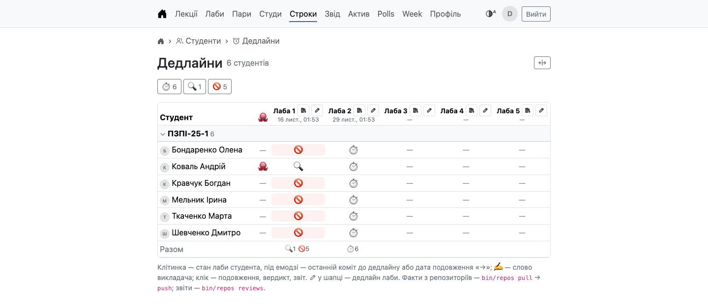

python-labs · T352 · спільне — в ядро
гілка ods · 17 комітів · без push · 19.11.2026 · вибори — тікет T353
Готово: ods має ті самі сторінки платформи, що й python, спільне лежить у ядрі, python-сайт поводиться, як поводився.
ods.Ядро вже тримало майже всю платформу. Бракувало трьох речей: ods не підключив половини сторінок, у python-сайті лежали цеглинки, які нічого не знають про ігри, а смоуки платформи запускались лише з python.
GET /api/labs ядра перекривав список лаб ods: «Моя лаба» не працювалаimportКожна сторінка й функція python-сайту: де живе її код і що з нею на ods.
| Сторінка або функція | Код | ods |
|---|---|---|
| Підключено сьогодні | ||
«Строки» /deadlines — студенти × лаби, дедлайни по групах, подовження, слово викладача | ядро | підключено після дедлайну клітинки чекають твого слова — питання 1 |
«Звід» /table і бібліотека видів /table/views | ядро | підключено + 7 своїх колонок на лабу |
Опитування в Telegram /polls… — шаблони, відправка в гілки, результати, матриця | ядро | підключено |
Тиждень /my/week, /week | ядро | підключено у «Перших кроках» ods не проситься — питання 4 |
| «Перші кроки» на домашній | python → ядро | є два кроки: вхід і бот |
| Було на обох і раніше | ||
| Вхід Google, ролі, «Очима студента», токени агентів | ядро | було |
| Профіль, список студентів, картка студента, імпорт списків | ядро | було + колонка «Лаби» і два фільтри |
Бот: привʼязка, сповіщення з маршрутами /here, нотатки, /due, дайджест | ядро | було + свій вид «здав рядок відповідей» |
Пари /lessons, відвідування, Zoom | ядро | було |
| Активність, помилки, історія правок | ядро | було + назва своєї колекції |
| Методичка: сторінки, редактор, чернетки | ядро | було лекції й лаби — на ній |
| Прилипле меню й «Ще», крихти, «нагору» і «☰ зміст», рядок «де я», «#» біля заголовків, спалах якоря, картки під мишкою, світла підказка, тема | ядро | було працює само, бо App.vue спільний |
| Лишилось у python-сайті | ||
Захисти /defenses, зауваження /my/remarks | python | питання 3 теги про код, відповідь комітом GitHub, монетки |
| Віконце емодзі | python | питання 6 дані — ігрові категорії; ods має малу палітру |
| Завантаження картинок, клієнт ШІ, «Знахідки» | python | питання 7 коли дійде до перевірки лаб ods |
| Ігри, таски, «Моя гра», ігротека, заявки, монетки, відео «Супроводу», ШІ «описати словами» | python | не потрібне |
| Машинерія сторінки гри: стовпці, вигляди секцій, інструменти картки, «Повернути» | python | не потрібне зшите з редактором гри; поїде з іграми до третього сайту |
Файли перенесено з історією (git mv). Python-сайт бере їх через @core/…; ods може брати так само.
| Що | Файли в core/ui | Навіщо воно другому сайтові |
|---|---|---|
| Пошук у тексті | search.js | пошук без огляду на регістр і «и / і», підсвітка знайденого |
| Markdown-текст | Md.vue · MdField.vue · InlineMd.vue | текст, який редагується там, де читається: клік — джерело на місці |
| Список-вибір | Picker.vue · pick.js | один список із пошуком, рядок каже, чому знайшовся. Слово «за запитом» тепер дає сайт, у ядрі його нема |
| Мова дій | SaveCancel.vue · MoreFields.vue | пара «✕ ✓» під формою; тихий ряд «⊕ поле» для рідких полів |
| Сторінка, що згортається | fold.js · jump.js | памʼять «розгорнуто · коротко · згорнуто»; «покажи де» зі спалахом |
| Дрібне | shortLink.js · GuideHead.vue | посилання, як його читають; текст розділу над каталогом |
| Домашня | StartSteps.vue | кроки «увійти · бот»; тиждень і свій рядок сайт вмикає в паспорті |
| Смоуки платформи | core/api/tests/ — 24 файли | той самий файл запускається з теки кожного сайту |
Сайт пише в students, table, start лише своє; решта лишається за замовчуванням. Раніше неповна група ламала сторінку.
students.TEACHER поруч з EXTRAS: бали, нотатки й посилання йдуть у «Звід» і список викладача, але не у список, який бачить студент.
Колонки й «для чого» видів «Усе», «Старт», «Лаба N» сайт задає у своєму table_seed.py.
kindДе номер мають і лекції, ядро більше не плутає лабу 1 з лекцією 1.
Код тут свій, бо йдеться про варіанти лаб. Механізм той самий, яким python-сайт додає ігри.
| Механізм ядра | python | ods, зроблено сьогодні |
|---|---|---|
Свої колонки «Зводу» site.table.cols | назва гри, що заповнено, заявки, монетки, відео | на кожну лабу: 🎴 варіант · 🎯 відповіді «11/13» · 🔁 спроб · 📨 здано · 📓 ноутбук · 💯 бали · 🗒 нотатка. Працюють як «ця лаба» у виді |
| Рядок студента з бекенду | EXTRAS: гра, видно всім | TEACHER: картки лаб, лише викладачеві |
| Колонка й фільтри «Студентів» | «Гра»; «🎮 гра», «⏳ є що перевірити» | «Лаби»: «Л1 14б · Л2 2/3 · Л3 🎴»; «🎴 картка», «📨 рядок» |
Заводські види table_seed.py | колонки за дедлайнами: реєстрація, гра, демо | без репозиторію; «Усе» — відповіді й бали кожної лаби |
| Свій вид сповіщень бота | заявки, гра, ідеї, ШІ, захисти | lab: «🟢 Лаба 1 · … · рядок відповідей: 13 із 13 ✅ · спроба 2» |
| Назви своїх колекцій в «Активності» | гра, заявка, правило… | «варіант лаби» |
Знімки зі стенда: студенти, картки й тексти вигадані, справжні лекції й лаби на стенд не потрапляли.




/api/variants.
bin/repos, звіти агентаСім речей знайшлось під час переносу. Шість виправлено й закрито перевірками, одна чекає твоєї команди.
students.EXTRAS бачить кожен, хто бачить рядок, students.TEACHER — лише викладач і «Звід». Картки ods ідуть у другий.GET /api/students від студента — 7 рядків, жодного з variants./api/labs/api/variants. У T238 і T251 я радив перейменувати ядро; тепер обрав навпаки, бо ods ще не на сервері: python-сайт, його прод і bin/repos не зачеплено.views_seed.DUE); ods вимкнув. «Усе», «Старт», «Лаба N» на ods — без колонок репозиторію; у «Лабі N» замість стану, який рахується з репозиторію, стоїть дедлайн студента поруч із датою здачі. Перевірено другим проходом на стенді.kind порожнім або labs. На python нічого не змінилось.ods тримає старі заводські видиods 12 видів «Зводу» створено раніше, з колонками python. Ядро наявних видів не перезаписує, тож нових колонок ods там не буде.views і view_versions у базі ods і відкрити «Звід»: види створяться заново. Я в дев-базу не пишу; скажи — зроблю. Зробити це треба до переносу бази на сервер.uv run і міг пересинхронізувати venv, на якому працюють твої дев-сервери. Тепер запускає той самий інтерпретатор.Звіти помічників я не брав на віру: усі смоуки проганяв сам після їхньої роботи, сторінки дивились у браузері на окремих стендах.
| Що | python | ods | Примітка |
|---|---|---|---|
Смоуки платформи, 24 файли з core/api/tests | 700 з 700 | 700 з 700 | той самий файл з теки кожного сайту; до переносу на ods їх ніхто не запускав |
| Смоуки сайту | 740 з 740 | 55 з 55 | python — 19 файлів про ігри, каталог, захисти, ШІ; ods — лаби, лекції, колонки «Зводу» |
| Логіка «Зводу» без браузера | 38 з 38 | node core/ui/tests/smoke_table.mjs | |
| Збірка фронту | ✓ | ✓ | npm run build в обох |
| Сторінки в headless Chrome, стенд | 9 сценаріїв ✓ | 10 сценаріїв ✓ | python: домашня, текст над каталогом, пошук, список-вибір, редагування на місці, «✕ ✓», «покажи де», згортання, захисти, «Звід», темна тема і 390 px — регресій нема. ods: 9 з 10 одразу; провал («Дедлайн N») виправлено й пройдено вдруге |
| Чужі дані від імені студента | — | ✓ | GET /api/students без карток лаб, /api/table — 403 |
lab і опитування на ods перевірено до колекції подій, без бота.127.0.0.1:5035: домашня з «Першими кроками», меню «Строки · Звід · Polls · Week», «Моя лаба».ods (знахідка вище) — або сказати мені.AGENT_TOKENS=claude:<токен> у sites/ods/api/.env і пара ODS_URL / ODS_TOKEN у .site/.env. Далі bin/lesson -t ods … (з LESSONS_DIR=sites/ods/transcripts), bin/zoom -t ods, bin/guide -t ods.| Де | Що | Чому не чіпав |
|---|---|---|
| Профіль студента на ods | поле «GitHub — посилання на репозиторій» | питання 2: лишити чи прибрати |
| «Строки» на ods | колонка 🐙, «без репозиторію», підказки про bin/repos | питання 1 і 2 |
| Вхід і домашня, обидва сайти | тому, кого ще нема в списках, домашня каже «тебе ще нема в списку курсу», а сторінка входу — «ти в списку» | текст твій; скажи, який правильний |
| Меню, обидва сайти | «Polls» і «Week» англійською; студент бачить «Week» | питання 8 |
| «Результати лаби» на ods | картка без рядка виглядає як здані «0 / 3»; відхилені 25 балів лишаються в полі | сторінка перевірки лаб — наступна тема |
| Домашня ods | «Лекції 15 · Лаби 5» рахуються з паспорта сайту, а не з опублікованих сторінок | так було; на справжній базі сторінки є |